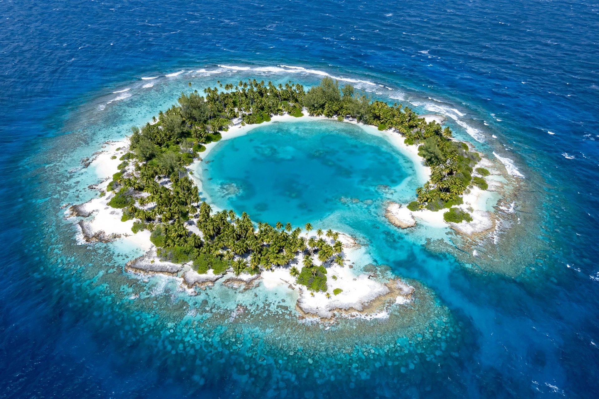

| Geography | Caroline Islands, Pacific Ocean |
| Location | Pohnpei State, Federated States of Micronesia |
| Coordinates | 6°13′N 160°42′E (approx.) |
| Total islands | 3 islets on a reef atoll |
| Area | approx. 1.8 km² land |
| Population | approx. 250 (on the atoll) |

Pingelap is an atoll in Pohnpei State of the Federated States of Micronesia, in the Caroline Islands of the western Pacific Ocean. It consists of three islets — Pingelap Island, Sukoru and Daikai — linked by a reef system and enclosing a central lagoon. Only Pingelap Island is inhabited.
Pingelap was sighted by European navigators in the early 19th century and fell under Spanish, then German, then Japanese colonial administration before passing to the United States as part of the Trust Territory of the Pacific Islands after the Second World War.
Pingelap is famous in genetics and neurology for the unusually high prevalence of complete achromatopsia (total colour blindness, known locally as maskun, "not see" in Pingelapese) among its people. Around 1775, a catastrophic typhoon — remembered as Typhoon Lengkieki — killed most of the population, leaving perhaps twenty survivors. One of them, the ruler (nahnmwariki) Nanmwarki Mwanenihsed, carried a recessive mutation in the CNGB3 gene responsible for achromatopsia. Generations of inbreeding within the small, isolated population raised the frequency of the condition: roughly 5–10 per cent of Pingelapese are completely colour-blind, and about 30 per cent are carriers — rates far above the roughly 1 in 30,000 seen elsewhere.
The atoll was brought to wide attention by neurologist Oliver Sacks's 1997 book The Island of the Colorblind, which described Pingelap alongside the island of Guam. Many achromatopic islanders work as fishermen, using their superior rod vision and lack of colour glare sensitivity in dim light, though they are severely light-sensitive in full daylight.
The atoll lies about 300 km southeast of Pohnpei. A larger Pingelapese diaspora community lives on Pohnpei itself. The island has no airstrip; access is by boat. The economy is subsistence-based, centred on fishing, breadfruit, taro and coconut.